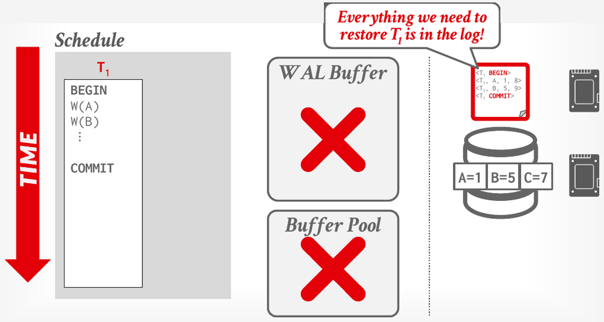
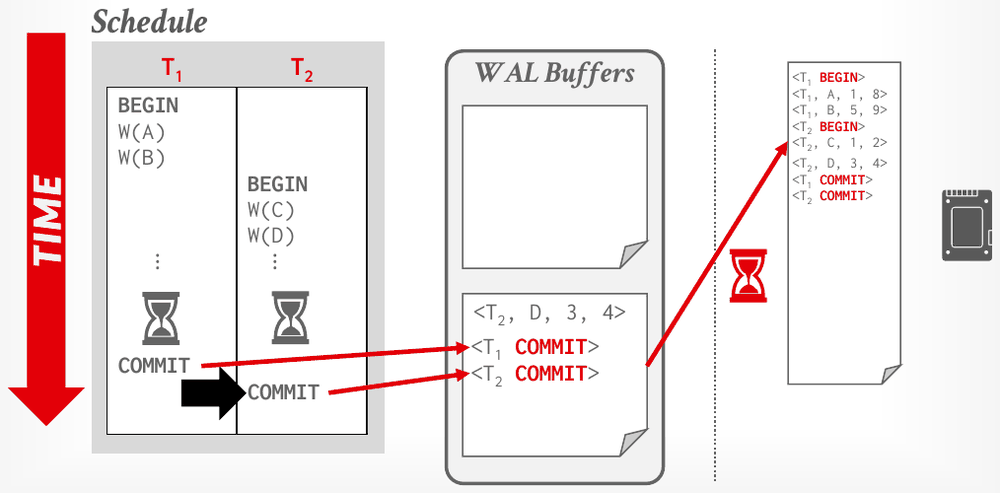
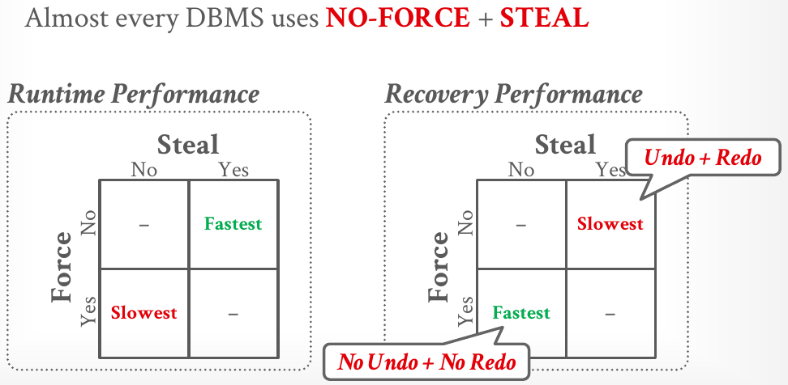

Database Internals in Go · Unit 9 · Lesson 2
Write-Ahead Logging and Logging Schemes
Trace the write-ahead logging protocol through a schedule, saying which records it writes and what must reach disk before a page is written or a commit is acknowledged, and compare physical, logical and physiological log records.
Lesson 1 ended with your buffer pool behaving as STEAL + NO-FORCE, the combination whose recovery needs both undo and redo, with nothing on disk to provide either. Shadow paging avoided recovery work, but at every commit it wrote whole pages to random places on disk. A write-ahead log writes small records describing each change, sequentially, to a separate file, and it writes them before the pages they describe. That is enough to let the buffer pool steal and not force, which is what almost every DBMS does.
Unit 1, Lesson 1: what does Lecture #03 say about random and sequential access on non-volatile storage?
Unit 1, Lesson 3: in a log-structured storage manager, what happens when the MemTable fills up?
Unit 8, Lesson 5: what does a Project 4 undo log (concurrency.UndoLog) hold?
From random page writes to a sequential log
Slide 20 states shadow paging's problem: it makes the DBMS write to random, non-contiguous pages on disk. The DBMS needs a way to turn random writes into sequential ones, and it would be good not to write an entire page each time it changes. CouchDB appends its shadow pages to the end of the database file, which makes the writes sequential, but it still writes out whole pages.
A write-ahead log (WAL) solves both (slide 21). The DBMS keeps a log file, separate from the data files, that contains the changes transactions make to the database. The lecture assumes the log is on stable storage, and the log holds enough information to perform any undo and redo needed to restore the database. The rule that gives the log its name: the DBMS must write to disk the log records that correspond to a change to a database object before it can flush that object to disk.
The slide gives the buffer pool policy as STEAL + NO-FORCE. The notes explain the trade. STEAL lets dirty pages go to disk before commit, which removes NO-STEAL's memory limit. NO-FORCE means commit doesn't have to write every changed page. In exchange, recovery has to handle both undo, for rolled-back transactions whose changes reached disk, and redo, for committed transactions whose changes didn't.
What each policy asks of the log
Slide 22 puts the four combinations in a grid. NO-STEAL + FORCE is "Trivial"; STEAL + NO-FORCE is "Desired". The boxes around the grid say what each choice costs or requires. The two that border the "Desired" cell say what the log must provide: NO-FORCE needs a log flushed at commit for redo, and STEAL needs the old value in the log for undo.
![A two-by-two grid with Steal (No, Yes) across the top and Force (No, Yes) down the side. The cell Steal=Yes, Force=No is labelled Desired; the cell Steal=No, Force=Yes is labelled Trivial. Boxes beside the grid: No-Force: To recover after a crash before a page is flushed to disk, flush summary/log @ commit for REDO. Force: On every update, flush the updated page to disk. Poor response time but enforces durability of committed txns. Boxes below: No-Steal: Low throughput but works for aborted txns. Steal: Flush unpinned dirty page even if updating txn is active. To ensure atomicity if a flushed page is modified by an uncommitted txn, record old value in log for UNDO.](../assets/slides/L21-steal-force-matrix-p64.png)
Note the word "unpinned" in the Steal box. Stealing never takes a page that a thread is using right now. The pin count you maintained in Project 1 still decides which frames are candidates, and the WAL adds one step before a dirty candidate is written: its log records go to disk first.
The WAL protocol
Slide 23 gives the protocol in three rules:
- The DBMS stages all of a transaction's log records in volatile storage, usually backed by the buffer pool.
- All log records pertaining to an updated page are written to non-volatile storage before the page itself is overwritten in non-volatile storage.
- A transaction is not considered committed until all its log records have been written to stable storage.
Slide 24 says what goes into the log. The DBMS writes a <BEGIN> record to mark each transaction's start. Every time a transaction changes an object, it appends a record with:
- the transaction id;
- the object id;
- the before value, used for undo;
- the after value, used for redo.
The notes add that records can also carry system-dependent data such as a timestamp or a checksum. When a transaction finishes, the DBMS appends a <COMMIT> record and makes sure all the transaction's log records are flushed before it acknowledges the commit to the application. The slide marks the before value as not necessary with append-only MVCC, and the notes give the reason: previous versions are already maintained by the system.
The rule constrains pages only loosely. The notes say the DBMS can write dirty pages to disk whenever it wants, as long as it is after flushing the corresponding log records. That is the warning on Lecture #04's slide 33 about background writing, now with its reason. Lesson 3 turns the rule into a comparison of two numbers that the buffer pool can check before every write.
The example
Slide 25 starts with A=1, B=5, C=7 on disk and in the buffer pool. T1 begins, writes A and B, and commits:
- BEGIN puts
<T1 BEGIN>in the WAL buffer. - W(A) first appends
<T1, A, 1, 8>(before value 1, after value 8) to the WAL buffer, and only then changes A to 8 in the buffer pool. The slide numbers the two steps 1 and 2. - W(B) appends
<T1, B, 5, 9>and changes B to 9. - COMMIT appends
<T1 COMMIT>and flushes the WAL buffer to disk. The slide's bubble says that the transaction's result is now safe to return to the application.
The page is never written. Then the machine crashes.

#21 Database Logging, "Write-ahead logging" (44:41), slides 20–25: why shadow paging's writes are a problem, the WAL definition and policy grid, the protocol, record contents, and the A/B example through the crash.
Group commit
Every commit waits for a log flush. Slide 26 says that flushing the log buffer every time a transaction commits will become a bottleneck. Group commit batches several log flushes into one to amortize the overhead: the DBMS flushes the buffer when it is full, or after a timeout, for example 5 ms.
In slide 27's example, T1 and T2 run at the same time and append their records to a set of WAL buffers. The first buffer fills up and is flushed. Both transactions then reach COMMIT and append their COMMIT records to the second buffer, and both wait, shown by hourglasses, until that buffer is flushed. One write makes both commits durable.

The notes describe the timeout as enough time having passed since the previous flush. A transaction that commits just after a flush therefore waits for the next one.
#21 Database Logging, "Group commit optimization" (55:02), slides 26–27: why one flush per commit is a bottleneck, and the two-transaction example.
Runtime speed against recovery speed
Slide 29 compares the two common combinations twice. At runtime, STEAL + NO-FORCE is the fastest and NO-STEAL + FORCE the slowest. During recovery it is the other way round: STEAL + NO-FORCE is the slowest, because it needs undo and redo, and NO-STEAL + FORCE the fastest, with no undo and no redo.

The notes say that almost every modern DBMS uses write-ahead logging, because it writes sequentially and has the fastest runtime performance, even though its recovery is slower than shadow paging's, since it has to replay the log.
Log-structured systems are no exception (slide 28). They have no dirty pages, because any page read from disk is immutable. But they buffer recent changes in the in-memory MemTable, and when it fills up it must be flushed, possibly with changes of uncommitted transactions in it. These DBMSs still keep a separate WAL, so they can recreate the MemTable after a crash. Unit 1, Lesson 3 pointed out that the log in "log-structured" is the table itself and has nothing to do with this one.
Logging schemes
A log record can describe a change at different levels (slide 30):
- Physical logging records the byte-level changes made to a specific page, like a
git diff. - Logical logging records the high-level operations that transactions execute, such as the
UPDATE,DELETEandINSERTqueries themselves. The notes add that one such record isn't restricted to a single page. - Physiological logging is the hybrid: physical to a page, logical within a page. It records byte-level changes for a single tuple, identified by page id and slot number, and doesn't specify how the page is organized.
Slide 31 logs one statement, UPDATE foo SET val = XYZ WHERE id = 1;, all three ways.

Logical logging writes less data per record (slide 32), but recovery with it is hard:
- If the DBMS runs concurrent transactions at lower isolation levels, it is hard to determine which parts of the database a query had modified before the crash.
- Recovery takes longer, because the DBMS re-executes every query in the log.
Physiological logging is the most common approach (notes). Because a record names a slot rather than a byte offset, the notes say the DBMS can reorganize a page after the log record has been written to disk. That is the slotted page from Unit 1, Lesson 2: compaction moves a tuple's bytes within the page and updates its slot, so "page 99, slot 1" still names the same tuple.
#21 Database Logging, "Log record contents" (59:41), slides 28–32: log-structured systems, the runtime and recovery grids, and the three logging schemes with the UPDATE example.
Change data capture
The log is a complete, ordered record of every change, so it is useful beyond recovery. Change data capture (CDC) automatically propagates a database's changes to external systems to replicate and synchronize their contents (slide 33). The slide relates it to extract-transform-load (ETL) pipelines, and notes that some systems do it automatically while others need third-party tools. It lists three approaches: reading the WAL, triggers, and timestamps. The notes say the same log that ensures durability can feed replicas, data warehouses or microservices.
Logging in BusTub and the Go port
This unit has no project: neither BusTub nor the Go port has a working log manager, and you won't build one. BusTub at d49b823 still contains the outline of an old logging project, switched off:
src/include/recovery/log_manager.hdescribes aLogManagerthat "maintains a separate thread that is awakened whenever the log buffer is full or whenever a timeout happens", which is group commit. Itspersistent_lsn_means that the log records "before and including the persistent lsn have been written to disk". Inlog_manager.cpp,RunFlushThreadis empty andAppendLogRecordreturnsINVALID_LSN.- The comment on
RunFlushThreadsays the buffer pool may also force a log flush, which "only happens when the flushed page has a larger LSN than persistent LSN". That is the WAL rule seen from the buffer pool: before writing a page, make sure its log records are on disk. LSNs (log sequence numbers) are Lesson 3's subject. src/include/recovery/log_record.hasks for a log record "for every write operation on the table page". ItsUPDATErecord holds the tuple's RID, the old tuple and the new tuple. A RID is a page id and a slot, so this is physiological logging.src/include/common/config.hdefinesDISABLE_CHECKPOINT_MANAGER, andBustubInstancesetsenable_loggingto false and never creates aLogManager.
The Go port translated none of it. storage/disk/file_manager.go says the write-ahead log file and its methods are not translated because nothing in Project 1 uses them.
Project 4's undo logs are not a recovery log
The undo logs you built in Project 4 are versions, kept for readers that need an older snapshot. The Project 4 writeup says they are stored "within a transaction's in-memory workspace", and that "in a production system these logs would be persisted to disk, but this project does not require that for BusTub". They disappear in a crash, and nothing writes them before a page goes to disk, so they can't serve as a WAL's before values. Slide 24's remark that append-only MVCC makes the before value unnecessary relies on the system keeping the old versions; Project 4 keeps them only in memory.
Work it out
Decide each one on paper before opening the result.
-
What to think about
Which event makes a transaction committed under the WAL protocol, and what triggers that event under group commit?
The method
Slide 24: flush before acknowledging. Slide 26: flush when the buffer is full or on timeout. Find the first moment either can happen.
The result
Not before the next flush, at the latest about 4 ms later when the timeout fires (sooner if other transactions fill the buffer first). Until the COMMIT record is on stable storage, a crash would lose it, and T1 would have to be treated as uncommitted.
-
What to think about
What does each record use to find the tuple inside page 99?
The method
Recall what compaction changes on a slotted page (Unit 1, Lesson 2): the bytes' position, and which entry of the slot array.
The result
The physiological one. It names slot 1, and compaction updated slot 1 to the tuple's new offset. The physical record names offset 1024, which no longer holds the tuple. This is why the notes say physiological logging lets the DBMS reorganize pages after a record is on disk.
The homework behind these questions
The questions marked HW6 come from CMU's Homework #6: Question 2, with the original figures. Work each one out on paper first, then click the option you got. The quiz tells you at once whether it matches CMU's official answer, and explains why. To compare your working step by step, open the official solutions for Question 2.
Check your understanding
HW6 Q2(c), true or false: "If the DBMS is using the STEAL and NO-FORCE policies, then a transaction is considered committed if all of the data pages that it modified have been written to non-volatile storage." Which statement matches the official answer?
HW6 Q2(h), true or false: "If the DBMS uses a physical logging scheme for its WAL, then it does not need to maintain additional WAL records for updates to indexes." Which statement matches the official answer?
Which ordering does the write-ahead logging protocol require?
After slide 25's crash, the log on disk holds <T1 BEGIN>, <T1, A, 1, 8>, <T1, B, 5, 9> and <T1 COMMIT>, and the database on disk says A=1, B=5. Which values does recovery use, and for what?
A DBMS keeps a write-ahead log but uses STEAL + FORCE. Which values must its update records carry for crash recovery?
Primary sources: CMU 15-445/645 Fall 2025 Lecture #21 slides 20–33 and notes (sections 6–7); Lecture #04 slide 33; Homework #6 Question 2, parts (c) and (h), and its official solutions; the Project #4 writeup; BusTub src/include/recovery/log_manager.h, src/recovery/log_manager.cpp, src/include/recovery/log_record.h, src/include/common/config.h and src/common/bustub_instance.cpp at commit d49b823; the Go port's storage/disk/file_manager.go.